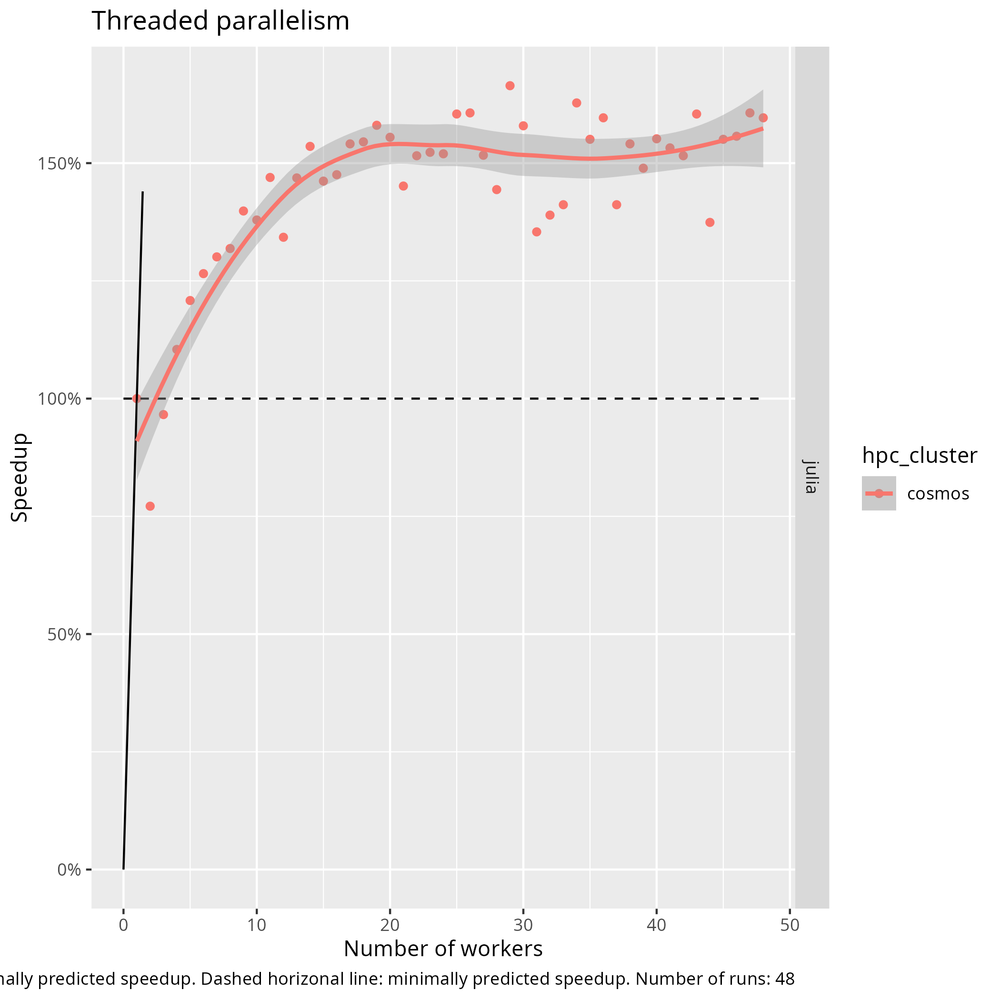

Parallel computation¶
Learning outcomes
- I can name and describe 3 types of parallel computation
- I can explain at least 1 advantage of parallel computation
- I can explain at least 2 disadvantages of parallel computation
- I can explain how to use my computational resources effectively
For teachers
Teaching goals are:
- Learners have scheduled and run a job that needs more cores, with a calculation in their favorite language
- Learners understand when it is possible/impossible and/or useful/useless to run a job with multiple cores
Lesson plan:
- 10 mins: Prior
- 5 mins: Present
- 15 mins: Challenge
- 15 mins: Feedback
Prior:
- In an HPC context, what is a core?
- In an HPC context, what is a node?
- In an HPC context, what are computational resources?
- What is parallel computing?
- How does parallel computing work?
- When to use parallel computing?
Feedback:
- When to use parallel computing?
- When not to use parallel computing?
- The main section is called ‘The ideal effectiveness of parallelism’. What does ‘ideal’ mean in this context? What could make parallelism less ideal?
Prefer this session as a video?
The watch the YouTube video R-Julia-MATLAB course, advanced day: Parallel computation

Figure 1: CoRA, a robotic platform in which all computers (e.g. the one connected to the camera, another connected to the gripper, etc) sent messages to one receiving computer: an example of distributed parallelism
Why parallel computing is important¶
Most HPC clusters use 7-10 days as a maximum duration for a job. Your calculation may take longer than that. One technique that may work is to use parallel computing, where one uses multiple CPU cores to work together on a same calculation
HPC cluster architecture¶
Here is a simplified picture of HPC cluster architecture:
| Term | What it loosely is | Amount |
|---|---|---|
| Core | Something that does a calculation | One or more per CPU |
| CPU | A collection of cores that share the same memory | One or more per node |
| Node | A collection of CPUs that share the same memory | One or more per HPC cluster |
| HPC cluster | A collection of nodes | One or more per universe |
The universe [1] |
A collection of HPC clusters | One |
[1]this is a pun to distributed parallelism
Simplifications used
1 core is 1 worker is 1 thread is 1 procedure is 1 task
Why do we use this simplification?
Because we start from the assumption that we are reasonably smart, i.e. we will run as much threads as we have cores.
There is an exercise where this assumption is broken.
Types of ‘doing more things at the same time’¶
There are many types of ‘doing more things at the same time’. One way to distinguish these, is to separate these on the extent of the parallelism:
| Extent | Parallelism |
|---|---|
| Core | Single-threaded (you already do this) |
| Node | Thread parallelism (this session) |
| HPC cluster | Distributed parallelism (next session) |
| The universe | Distributed parallelism |
Today, we will extend your toolkit from a single-threaded calculation (you already do this) to thread parallelism.
The ideal effectiveness of parallelism¶
Before going into details, we will look at the effectiveness of parallelism in the most optimal case, with the goal that you can determine if it is worth it.
By now, you can probably guess that parallel computing spreads a calculation over multiple things that can calculate.
Imagine a calculation that takes 16 time units, represented as this:

Figure 2: a calculation of 16 time units run on 1 core, following the legend below:
| Square | A unit of calculation time that … |
|---|---|
 |
cannot be run in parallel |
 |
can be run in parallel |
 |
is spent doing nothing |
This calculation time is expressed in a time unit such as seconds and hence, can be split up into smaller blocks.
Using 2 calculation units, this results in:

Figure 2: a calculation of 16 time units run on 2 cores, where square is a time unit of calculation.
This takes the calculation down from 16 to 10 time units. The so-called ‘speedup’ of using two workers is 16 / 10 = 1.6.
How did you calculate the speedup exactly?
Following [Hennessy and Patterson, 2011] (section 1.8),
the speedup n (as in the sentence ‘X is n times faster than Y’)
equals:
where:
t_xis the time the new/enhanced process takest_yis the time the regular/unenhanced process takes
In this context, the ‘new/enhanced process’ is the calculation performed by multiple cores.
Do not be confused by another version of Amdahl’s Law, that is expressed and the calculation units used (and where the numerator and denominator are swapped):
where:
performance_xis the performance (e.g. tasks completed per time unit) the new/enhanced process doesperformance_yis the performance of the regular process
Isn’t that Gustafson’s Law?
Not directly.
We do use the same term ‘speedup’ as is calculated in Gustafson’s Law, yet we apply it to compare between a single-core and a multi-core process.
Gustafson’s Law predict the maximum speedup, which is
Sis the speedupsis fraction of the calculation that cannot be parallelized. The ‘s’ stands ‘serial’pis fraction of the calculation that can be parallelizedNis the number of workers, in our case: cores
However, 4 (out of 20) calculations units are spent waiting. This means that 16 / 20 = 80% of the calculation time is spent efficiently.
How did you calculate the efficiency exactly?
The efficiency, f, equals:
where:
t_used_effectivelyis the time spend on a calculation, summed up over all corest_totalis the total time all spent by all cores
These two can be calculated as such:
where:
sis fraction of the calculation that cannot be parallelized. The ‘s’ stands ‘serial’pis fraction of the calculation that can be parallelizedNis the number of workers, in our case: cores
Here one can see this calculation for more cores:
| Program runtime | Number of cores | Time | Speedup | Efficiency |
|---|---|---|---|---|
|
1 | 16 | 16 / 16 = 100% | 16 / 16 = 100% |
|
2 | 10 | 16 / 10 = 160% | (10 + 6) / (10 * 2) = 16 / 20 = 80% |
 |
3 | 8 | 16 / 8 = 200% | (10 + 4 + 4) / (10 * 3) = 60% |
 |
4 | 7 | 16 / 7 = 229% | (10 + 3 + 3 + 3) / (10 * 4) = 48% |
 |
6 | 6 | 16 / 6 = 267% | (10 + (2^5)) / (10 * 6) = 70% |
| . | 12 | 5 | 16 / 5 = .% | (10 + (1^11)) / (10 * 12) = 10% |
| . | 24 | 4.5 | 16 / 4.5 = .% | (10 + (0.5^23)) / (10 * 24) = 34 / 50 = 68% |
| . | 48 | 4.25 | 16 / 4.25 = .% | (10 + (0.25^47)) / (10 * 48) = 34 / 50 = 68% |
The best possible speed gain (as shown here) is called Amdahl’s Law
(inspired by [Amdahl, 1967])
and, in a general form, is plotted like this:

Exercises¶
Question -1: change your Zoom name¶
Change your Zoom name, to include your HPC cluster and favorite
programming language, e.g. make Sven into Sven [Alvis, R].
You can do so by right-click on the video of yourself, then click ‘Rename’ to change your Zoom name.
Question 0: remember your Zoom room¶
| HPC cluster name | Main breakout room |
|---|---|
| Alvis | Room 1 |
| Bianca | Room 2 |
| COSMOS | Room 3 |
| Dardel | Room 4 |
| Kebnekaise | Room 5 |
| LUMI | Room 6 |
| Pelle | Room 7 |
| Rackham | Room 8 |
| Tetralith | Room 9 |
Question 1¶
Which of the lines in the graph of Amdahl’s Law corresponds with the worked-out example of 16 time units?
Answer
The red dotted line.
Using a different unit (i.e. ‘relative speed’, instead of ‘speedup’) was done on purpose. It is easy to convert between the two: just take the inverse (i.e. divide 1 by the value you have)
Question 2¶
In the example of 16 time units, what is the shortest amount of time that can be spent on the calculation, given infinite resources?
Answer
The length of the calculation that cannot be run in parallel, which is 4 time units.
Question 3¶
In the example of 16 time units, what is the maximal possible speedup?
Answer
400%, as the calculation takes 16 units of work on a single core, and 4 time units on an infinite amount of cores.
In mathematical form, the speedup, S, equals:
where:
t_enhancedis the time the enhanced process takest_regularis the time the regular/unenhanced process takes
Question 4¶
For your research project, you need to run a lot of calculations. Each calculation takes 10 hours. How do you make optimal use of your computational resources?
Answer
Run the calculation on a single core for 100% efficiency
Question 5¶
For your research project, you also have a calculation that takes 11 days. Your HPC cluster allows a calculation of at most 10 days. Assume your HPC center will not extend your job (they will probably do so when asked: we are there to help!). How do you make optimal use of your computational resources?
Answer
If your calculation already has parallelism built-in, then run the calculation on two cores: this only involves changing your Slurm script, with a low loss of computational resources.
If you are a really tight on computational resources, you can implement a ‘save state’ in your calculation, so that you can schedule two runs of nine days in succession, each with 100% efficiency.
Alternatively, you can added thread parallelism to allow running with multiple cores.
Question 6¶
Your colleague runs many jobs with a lot of cores. ‘It is way faster!’, he/she states. That same colleague, however, also complains about long waiting times before his/her jobs start. How would you explain this situation?
Answer
The colleague used up (or: ‘wasted’) all his/her computational resources (commonly 10,000 core hours per month on UPPMAX).
Due to this, his/her jobs are only run when the HPC cluster has a low workload and activates the so-called ‘bonus queue’ (UPPMAX) or generally have to wait for their priority to go up again.
Question 7¶
Your colleague has also done the exercises in this session and decided to measure the same features of her code. Below you can see the plots produced by this benchmark. What seemed to be the percentage of his/her code that could be run in parallel?
Benchmark: the total core seconds per number of workers
Benchmark: Efficiency per number of workers

Benchmark: Speedup per number of workers
Answer
It is unknown what portion of the code can be run in parallel.
Instead, this benchmark shows how it looks if code is run in single-thread mode. In this case, the colleague forgot that the number of threads used must be specified when calling Julia.
Note that these plots are less clear than you may have expected:
- The total core seconds is expected to increase linearily
- The efficiency is expected to follow the dashed line
- The speedup is expected to be at 100%
It may be unexpected that also in computer science, results can be messier than you would expect :-)
References¶
[Amdahl, 1967]Amdahl, Gene M. “Validity of the single processor approach to achieving large scale computing capabilities.” Proceedings of the April 18-20, 1967, spring joint computer conference. 1967. Fun facts: it contains a single hand-drawn plot and no equations[Hennessy and Patterson, 2011]Hennessy, John L., and David A. Patterson. Computer architecture: a quantitative approach. Elsevier, 2011.